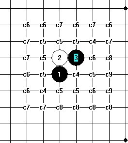
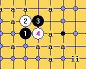
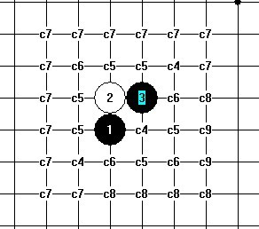
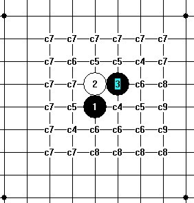

山口花月研究
#1 山口花月研究 作者：安娜制作所 发表时间：2011-5-26 8:04:38
ShowPost.asp?PageIndex=3&ThreadID=13454#2 Re:山口花月研究 作者：安娜制作所 发表时间：2011-5-28 9:01:15
#3 Re:山口花月研究 作者：侯军学棋 发表时间：2011-5-28 20:13:06
这个点5打不是发够了吗？#4 Re:山口花月研究 作者：自来水 发表时间：2011-5-28 20:18:29
不都是对称的嘛，哪里有五打#5 Re:山口花月研究 作者：安娜制作所 发表时间：2011-5-30 8:44:42
所以发帖求教啊!
#6 Re:Re:山口花月研究 作者：安娜制作所 发表时间：2011-5-30 12:56:27

 缺一打花月谱.rar
缺一打花月谱.rar
#7 Re:山口花月研究 作者：屏蔽 发表时间：2011-5-30 14:15:37
1、2旁边的两个c5应该可以变成c6
还有一件事：该停就停了。
#8 Re:山口花月研究 作者：安娜制作所 发表时间：2011-5-30 15:23:40
当然要先解决C4,做完五打就可以去做六打了. KEEP MOVING !#9 Re:山口花月研究 作者：自来水 发表时间：2011-5-30 15:27:37
=======上图对应的爱五子棋谱代码如下，以便你拆解：========
h8h9i9i8
======================================================
觉得这个5打遥远了...
上次蒲月那个
=======上图对应的爱五子棋谱代码如下，以便你拆解：========
h8i9i7g9g8f8h10
======================================================
还没有结果的呵
#10 Re:Re:山口花月研究 作者：屏蔽 发表时间：2011-5-30 15:31:40
引用：
原文由 安娜制作所 发表于 2011-5-30 15:23:40 :
当然要先解决C4,做完五打就可以去做六打了. KEEP MOVING !
你错了。你应该试着解决能解决的。
#11 Re:山口花月研究 作者：安娜制作所 发表时间：2011-5-30 16:23:48
9楼自来水老师. 这两个五打我会研究的.那个蒲月五打的唯一六难点太多,目前没有什么大的进展.跟斜一的那个13手差不多8.最近大寒星的平四和最强四,也没进步,所以我来抽个空,把花月谱做一做.(有人说做到六七打了)#12 Re:Re:山口花月研究 作者：安娜制作所 发表时间：2011-5-31 8:02:23
#13 Re:Re:Re:山口花月研究 作者：安娜制作所 发表时间：2011-6-1 9:01:42

［此帖子已被 安娜制作所 在 2011-6-1 9:02:16 编辑过］